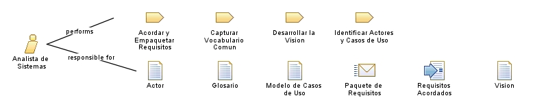

Role: Analista de Sistemas
Lidera la captura y definición de requisitos y sirve de puente entre stakeholders y equipo. Habilidades: comunicación, elicitación, modelado de casos de uso.
Role Sets:
Equipo de Requisitos
Relationships

Categories
Roles
Primary Performs
Acordar y Empaquetar Requisitos
Capturar Vocabulario Comun
Desarrollar la Vision
Identificar Actores y Casos de Uso
Additionally Performs
Especificar Requisitos Complementarios
Revisar Requisitos
Modifies
Actor
Glosario
Modelo de Casos de Uso
Paquete de Requisitos
Requisitos Acordados
Vision
Process Usage
Detallar Requisitos
>
Detallar Requisitos
>
Analista de Sistemas
Disciplina de Requisitos – UP
>
Construccion
>
Iteracion de construccion
>
Analista de Sistemas
Identificar y Delimitar Requisitos
>
Definir el alcance
>
Analista de Sistemas
Identificar y Delimitar Requisitos
>
Modelar Dominio y vocabulario
>
Analista de Sistemas
Validar y Acordar Requisitos
>
Validar y Acordar
>
Analista de Sistemas